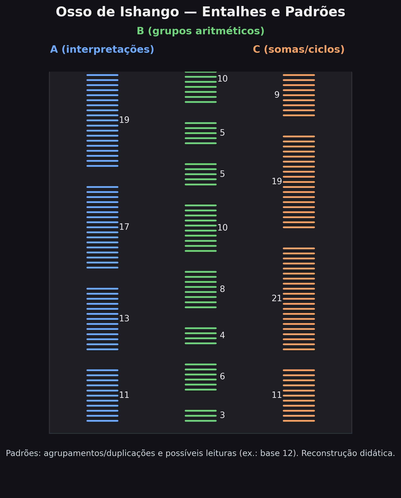

# Gera: images/ishango-diagrama-colunas.png e .svg
import os
import matplotlib.pyplot as plt
from matplotlib.patches import Rectangle
from matplotlib.collections import LineCollection
col_A = [11, 13, 17, 19]
col_B = [3, 6, 4, 8, 10, 5, 5, 10]
col_C = [11, 21, 19, 9]
os.makedirs("images", exist_ok=True)
bg, fg, subtle = "#111217", "#f1f1f1", "#cfd2d8"
col_colors = ["#6ea8fe", "#6fd17a", "#f3a065"]
fig, ax = plt.subplots(figsize=(8.4, 9.4), dpi=300)
ax.set_facecolor(bg); fig.patch.set_facecolor(bg)
x_positions = [0.24, 0.50, 0.76]
notch_len, dy_notch, dy_group, line_w = 0.08, 0.012, 0.038, 2.2
def draw_column(x, groups, color, label, y0=0.17, annotate_side="auto"):
y = y0
segs, centers = [], []
side = -1
for g in groups:
for i in range(g):
yi = y + i*dy_notch
segs.append(((x - notch_len/2, yi), (x + notch_len/2, yi)))
cy = y + (g-1)*dy_notch/2 if g>1 else y
centers.append((cy, g))
y += g*dy_notch + dy_group
y_max = y - dy_group + dy_notch
ax.add_collection(LineCollection(segs, colors=color, linewidths=line_w, capstyle="round"))
ax.text(x, y_max + 0.024, label, ha="center", va="bottom", fontsize=12.5, weight="bold", color=color)
for cy, g in centers:
if annotate_side == "left": side = -1
elif annotate_side == "right": side = +1
else: side *= -1
ax.text(x + side*0.058, cy, str(g), ha="center", va="center", fontsize=10.5, color=fg)
return y0, y_max
a_min, a_max = draw_column(x_positions[0], col_A, col_colors[0], "A (primos)", annotate_side="right")
b_min, b_max = draw_column(x_positions[1], col_B, col_colors[1], "B (grupos aritméticos)", annotate_side="right")
c_min, c_max = draw_column(x_positions[2], col_C, col_colors[2], "C (somas notáveis)", annotate_side="left")
y_min, y_max = min(a_min,b_min,c_min), max(a_max,b_max,c_max)
ax.add_patch(Rectangle((0.10, y_min - 0.030), 0.80, (y_max - y_min) + 0.060,
facecolor="#1d1f25", edgecolor="#2c313a", lw=1.2, zorder=-5))
ax.text(0.5, y_max + 0.065, "Osso de Ishango — Entalhes e Padrões",
ha="center", va="bottom", fontsize=16.5, color=fg, weight="bold")
ax.text(0.5, y_min - 0.068,
"Padrões: primos (A), duplicações (B) e somas/ciclos (C). Reconstrução didática.",
ha="center", va="top", fontsize=10.2, color=subtle)
ax.set_xlim(0,1); ax.set_ylim(0,1); ax.axis("off")
plt.savefig("images/ishango-diagrama-colunas.png", dpi=300, bbox_inches="tight", facecolor=fig.get_facecolor())
plt.savefig("images/ishango-diagrama-colunas.svg", dpi=300, bbox_inches="tight", facecolor=fig.get_facecolor())
plt.close()💾 Parte 1 — As RaÁzes Antigas
tecnologia
história da computação
computação
história
instrumentos de cálculo
antiguidade
ábaco
AnticÁtera
cálculo
lógica
civilizações antigas
Do ábaco à Máquina de AnticÁtera — os primeiros instrumentos que transformaram o pensamento em cálculo.
↠História da Computação · ↠InÁcio

1 💾 Parte 1 — As RaÁzes Antigas
“Antes dos circuitos, vieram as ideias.
Antes do silÁcio, o cálculo era humano.”
1.1 🺠O impulso de contar
A história da computação começa muito antes da eletricidade, dos circuitos e dos códigos binários.
Ela nasce no instante em que o ser humano descobre o poder do sÁmbolo — a capacidade de fazer o mundo caber em um sinal, um traço, uma pedra.
Esse impulso de representar o real por meio de abstrações é a semente tanto da matemática quanto da computação.
Marcas feitas em ossos, pedras ou argila tornaram-se extensões da mente, permitindo que o pensamento se fixasse fora do corpo, transformando memória em matéria.
Entre os exemplos mais antigos está o Osso de Ishango, datado de cerca de 20 mil anos atrás e encontrado nas margens do Lago Eduardo, na África Central.
Em seu pequeno corpo de marfim fossilizado, veem-se colunas de entalhes agrupados — talvez contagens lunares, talvez operações aritméticas primitivas.
O que importa é o salto cognitivo: ali surge a ideia de registro, o ato de gravar um raciocÁnio no mundo fÁsico.
“Contar é o primeiro algoritmo.
O resto é apenas sua automatização.”
🪶 Curiosidade Arqueológica — Os Primeiros Registros Numéricos
- Osso de Lebombo (Suazilândia, ~35 000 a.C.) — entalhes regulares para contagem simples.
- Tally sticks europeus — bastões de madeira com cortes que registravam trocas comerciais.
- Tábuas de argila mesopotâmicas — controle de grãos e impostos: os primeiros bancos de dados da humanidade.
1.2 🦴 Osso de Ishango (c. 20 000 a.C.)
O Osso de Ishango, descoberto em 1950 pelo arqueólogo Jean de Heinzelin de Braucourt, apresenta três colunas de entalhes verticais agrupados em padrões numéricos não aleatórios.
Pesquisas revelaram sequências como 3–6–4–8, 10–5–5–10 e até 11–13–17–19, correspondendo a números primos entre 10 e 20 — um sistema lógico de contagem, talvez um calendário lunar.
O artefato mostra pela primeira vez o raciocÁnio matemático materializado em um objeto fÁsico.
Guardado no Real Instituto de Ciências Naturais da Bélgica, simboliza o nascimento da consciência numérica.
💡 Curiosidade e legado
O Osso de Ishango é considerado o primeiro artefato matemático da história e, simbolicamente, o primeiro “dispositivo de armazenamento de dados†humano.

Clique para ver o código (Python) — Diagrama das Três Colunas
Nota
Leitura do diagrama. As três colunas representam (A) primos; (B) duplicações e repetições; (C) somas/totalizações.
1.3 🧮 Do Ábaco à s Tábuas
Antes das máquinas, vieram os instrumentos manuais — artefatos que tornaram o raciocÁnio visÁvel e tangÁvel.
Eles permitiram que a mente humana se projetasse no mundo, transformando pensar em gesto.
- Ábaco sumério (c. 2400 a.C.) — pedrinhas em sulcos representando valores posicionais.
- Ábaco chinês (suanpan, c. 500 a.C.) — contas móveis para operações complexas.
- Tábuas de cálculo — registros de transações e somas.
💡 Ideia-chave
Esses dispositivos inauguram a interface homem-máquina: o cálculo mental ganhou forma fÁsica.
1.4 🧮 Ábaco Sumério (c. 2400 a.C.)
Clique para ver o código (Python) — Diagrama do Ábaco Sumério
# Gera: images/abaco-sumerio-diagrama.png e .svg
import os
import matplotlib.pyplot as plt
from matplotlib.patches import Rectangle, Circle
os.makedirs("images", exist_ok=True)
bg = "#111217"
clay = "#d8c2a8"
clay_edge = "#b79e86"
groove = "#9d7f66"
stone = "#6b4f3a"
stone_hi = "#f0e6dc"
fg_global = "#f1f1f1"
fig, ax = plt.subplots(figsize=(8.6, 5.4), dpi=300)
ax.set_facecolor(bg); fig.patch.set_facecolor(bg)
rows = 5
cols = 8
spacing_y = 0.13
spacing_x = 0.095
x0, y0 = 0.17, 0.22
tablet_x, tablet_y = 0.10, 0.14
tablet_w, tablet_h = 0.80, 0.72
ax.add_patch(Rectangle((tablet_x, tablet_y), tablet_w, tablet_h,
facecolor=clay, edgecolor=clay_edge, lw=2.2, zorder=-5))
for i in range(rows):
y = y0 + i * spacing_y
ax.plot([x0, x0 + (cols-1)*spacing_x], [y, y],
color=groove, lw=6, alpha=0.9, solid_capstyle="round")
positions = [(1,0), (2,0), (4,0),
(0,1), (3,1), (6,1),
(1,2), (5,2),
(2,3), (5,3),
(4,4), (6,4)]
for (cx, cy) in positions:
x = x0 + cx*spacing_x
y = y0 + cy*spacing_y
r = 0.016
circ = Circle((x, y), r, facecolor=stone, edgecolor="#3f2f24", lw=0.6)
ax.add_patch(circ)
ax.add_patch(Circle((x-0.005, y+0.004), r*0.45, facecolor=stone_hi, edgecolor="none", alpha=0.35))
for i in range(rows):
y = y0 + i * spacing_y
ax.text(tablet_x - 0.04, y, f"Ordem {i+1}",
va="center", ha="right", color=fg_global, fontsize=10.5, fontweight="bold")
ax.text(0.5, tablet_y + tablet_h + 0.06,
"Ábaco Sumério — Disposição dos Cálculos em Tábuas de Argila",
ha="center", va="bottom", color=fg_global, fontsize=15, weight="bold")
ax.text(0.5, tablet_y - 0.04,
"Linhas = ordens; cÁrculos = cálculos móveis (pedrinhas).",
ha="center", va="top", color="#cfd2d8", fontsize=10.5)
ax.set_xlim(0,1); ax.set_ylim(0,1); ax.axis("off")
plt.savefig("images/abaco-sumerio-diagrama.png", dpi=300, bbox_inches="tight", facecolor=fig.get_facecolor())
plt.savefig("images/abaco-sumerio-diagrama.svg", dpi=300, bbox_inches="tight", facecolor=fig.get_facecolor())
plt.close()
Nota
Como ler. Cada linha horizontal é uma ordem (unidades, dezenas…); mover pedrinhas entre linhas altera o valor.
1.5 🧮 Ábaco Chinês (Suanpan, c. 500 a.C.)
Escavações em Sichuan e Henan revelaram versões antigas do suanpan, desde a dinastia Han.
Com duas contas superiores (5) e cinco inferiores (1), realizava todas as operações aritméticas.
🌏 Influência cultural
Inspirou o soroban japonês e o ábaco russo (schoty).
Exemplares no Museu Nacional da China e no Museu de Xangai.
1.6 ⚙️ Máquina de AnticÁtera (c. 100 a.C.)

Descoberta em 1901 num naufrágio perto da ilha de AnticÁtera, essa engenhoca de bronze é o primeiro computador analógico conhecido.
Calculava posições planetárias e eclipses, unindo astronomia, matemática e mecânica.
🔠Marco da engenharia antiga
Fragmentos originais no Museu Arqueológico Nacional de Atenas.
1.6.1 📠Bastões de Napier (1617)
Inventados por John Napier, criador dos logaritmos, automatizavam multiplicações com varas numeradas.
💡 Impacto matemático
Antepassados da régua de cálculo.
Originais na Biblioteca Nacional da Escócia e em Oxford.
1.6.2 📠Régua de Cálculo (1632)

Criada por William Oughtred, transformava multiplicações em somas por escalas deslizantes.
🧮 SÁmbolo da era pré-digital
Base do cálculo analógico moderno.
Modelos no Science Museum (Londres) e no Smithsonian (Washington).
1.6.3 🧠Máquina de Pascal (1642)

Aos 19 anos, Blaise Pascal construiu a Pascaline, capaz de somar e subtrair automaticamente com engrenagens.
⚙️ Legado histórico
Primeira calculadora comercial funcional.
Exemplares no Musée des Arts et Métiers (Paris) e no Zwinger (Dresden).
1.7 🕰️ Linha do Tempo — RaÁzes da Computação
Clique para ver o código (Python) — Linha do Tempo Vertical
# Gera: images/linha-do-tempo-raizes-computacao-vertical.png e .svg
import os
import matplotlib.pyplot as plt
from matplotlib.patches import Circle
from matplotlib.lines import Line2D
items = [
("Osso de Ishango", "c. 20 000 a.C.", "L"),
("Ábaco Sumério", "c. 2400 a.C.", "R"),
("Ábaco Chinês (Suanpan)", "c. 500 a.C.", "L"),
("Máquina de AnticÁtera", "c. 100 a.C.", "R"),
("Bastões de Napier", "1617", "L"),
("Régua de Cálculo", "1632", "R"),
("Máquina de Pascal", "1642", "L"),
]
os.makedirs("images", exist_ok=True)
bg = "#121316"
timeline_color = "#6ea8fe"
label_color = "#f1f1f1"
node_colors = ["#8b8dfb", "#75a7ff", "#57c0b6", "#6fd17a", "#e8c06f", "#f3a065", "#f17a54"]
fig = plt.figure(figsize=(8, 15.5), dpi=300)
ax = plt.gca()
ax.set_facecolor(bg); fig.patch.set_facecolor(bg)
x_center = 0.5
y_top, y_bot = 0.92, 0.10
n = len(items)
ys = [y_top - i * ((y_top - y_bot)/(n-1)) for i in range(n)]
ax.add_line(Line2D([x_center, x_center], [y_bot, y_top], lw=6, color=timeline_color, alpha=0.9, solid_capstyle="round"))
ax.text(0.5, 0.965, "RaÁzes da Computação", ha="center", va="center", fontsize=24, color=label_color, weight="bold")
for i, ((label, date, side), y) in enumerate(zip(items, ys)):
ax.add_patch(Circle((x_center, y), 0.008, color=node_colors[i], ec="none"))
if side == "L":
x_text = x_center - 0.02; ha = "right"; x_tick = x_center - 0.015
else:
x_text = x_center + 0.02; ha = "left"; x_tick = x_center + 0.015
ax.add_line(Line2D([x_center, x_tick], [y, y], lw=2.5, color=node_colors[i]))
ax.text(x_text, y + 0.018, date, ha=ha, va="bottom", fontsize=13, color=label_color, weight="bold")
ax.text(x_text, y - 0.002, label, ha=ha, va="top", fontsize=13, color=label_color)
ax.text(0.5, 0.04, "História da Computação — Parte 1", ha="center", va="center", fontsize=10, color="#b8b8b8")
ax.set_xlim(0,1); ax.set_ylim(0,1); ax.axis("off")
plt.savefig("images/linha-do-tempo-raizes-computacao-vertical.png", dpi=300, bbox_inches="tight", facecolor=fig.get_facecolor())
plt.savefig("images/linha-do-tempo-raizes-computacao-vertical.svg", dpi=300, bbox_inches="tight", facecolor=fig.get_facecolor())
plt.close()
Dica
SÁntese. Da abstração pré-histórica ao cálculo mecânico, esses artefatos mostram a jornada humana rumo à mecanização do pensamento lógico.
1.8 🧩 Quiz — As RaÁzes da Computação
Q1. Qual das opções abaixo descreve melhor o significado histórico do ábaco?
✗Um brinquedo usado em rituais antigos.
✓Um instrumento de cálculo que representou operações mentais em forma fÁsica.
✗Um sistema de numeração binária usado pelos gregos.
Q2. Por que a Máquina de AnticÁtera é considerada um marco?
✗Porque usava eletricidade para calcular.
✗Porque era apenas um calendário solar.
✓Porque utilizava engrenagens mecânicas para prever fenômenos astronômicos — uma forma analógica de computação.
1.9 Referências Rápidas
- Freeth et al. The Antikythera Mechanism. Nature, 2006.
- Ifrah, G. A História Universal dos Números.
📘 Próximo capÁtulo: 👉 Parte 2 — Era Mecânica
↠História da Computação · ↠InÁcio · 🔠Topo
Blog do Marcellini — Explorando a História da Computação com Rigor e Beleza.